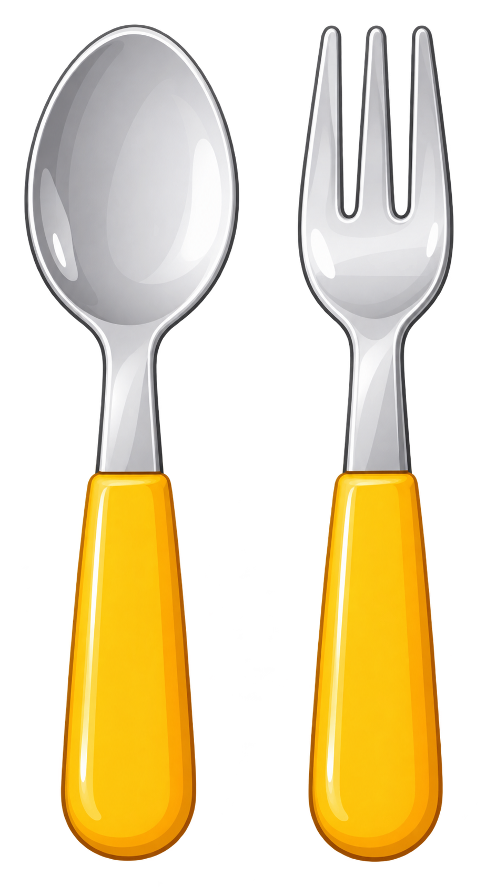
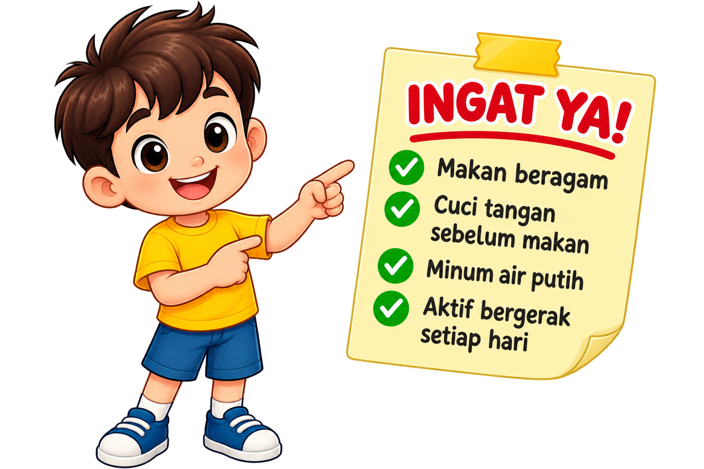
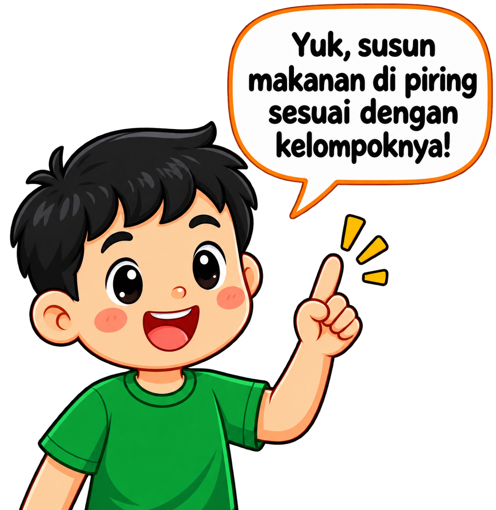
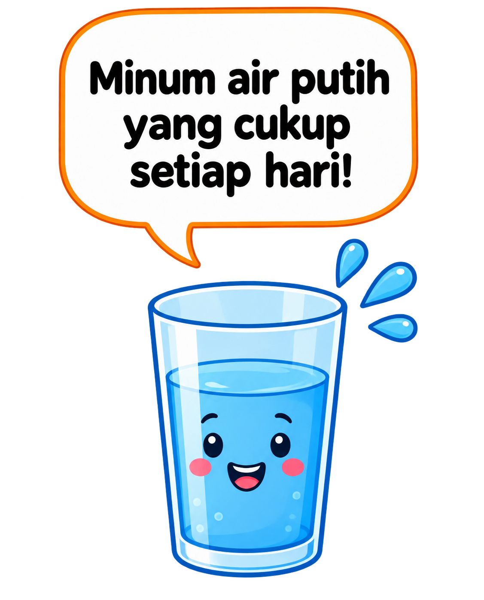

Belajar makan sehat
sesuai pedoman gizi seimbang:
🍚 Makanan Pokok 1/3 • 🥬 Sayuran 1/3
🍗 Lauk-Pauk 1/6 • 🍎 Buah 1/6




Kamu berhasil mengisi semua bagian piring sesuai pedoman "Isi Piringku". Terus jaga pola makan sehat ya! 💪